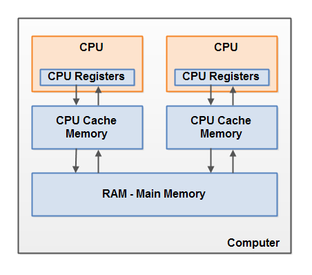

A review about Concurrency on the JVM for
modern Java developers.
Juan Antonio Breña Moral
Concurrency rosseta stone
Follow the talk from your smartphone:

Concurrency rosseta stone
Example repository:

Agenda
- Who I am
- Expectations
- Context
- Concurrency concepts
- Concurrency evolution in the JVM
- Design patterns that impacts you
- Other concurrency approaches
- Concurrency tools: JCStress
- How to help the team?
- References
- Q&A
Who I am
Juan Antonio Breña Moral
|
|
Engineering in Industrial Organization (M.S.) @ ICAI Head of Developer Relations @ Amadeus for developers Associate Professor @ ICAI STEAM Teacher @ Space Math @juanantoniobm | Github |
Expectations
- Generate curiosity about potential issues by concurrency.
- Understand better the Java Memory Model.
- Understand the evolution of concurrency in Java.
- Learn how to use JCStress in your projects
Context
- The Java programming language has included Multithreading features since 1996 (Java 1.0).
- Not all Java developers understand how to program thread-safety code.
- Handling shared memory is the main approach in Java but it is not the unique approach.
- Is it still valid the term: "Write once, run everywhere"? (When you deploy multithreading code in production).

Context
Question: Did all your team members read "Concurrent Programming in Java" or "Java concurrency in practice" at least once?
https://pollev.com/juanantoniobrenamoral114


Context
Question: Did you face in the past a Concurrency issue?
Context & Concepts
Question: What kind of concurrency objects or language resources, do you use in your daily job?
Concurrency concepts
- Concurrency & Parallelism
- Amdahl's law
- Cache coherency
- JMM, Java memory model
Concurrency concepts
Concurrency & Parallelism

Concurrency concepts
Amdahl's law
Amdahl's law is a formula which gives the theoretical speedup in latency of the execution of a task at fixed workload that can be expected of a system whose resources are improved. Specifically, it states that "the overall performance improvement gained by optimizing a single part of a system is limited by the fraction of time that the improved part is actually used".
https://en.wikipedia.org/wiki/Amdahl%27s_lawConcurrency concepts
JMM, Java memory model
Defines the semantics of multithreaded programs
The Java memory model describes how threads in the Java programming language interact through memory. Together with the description of single-threaded execution of code, the memory model provides the semantics of the Java programming language.
https://en.wikipedia.org/wiki/Java_memory_modelConcurrency concepts
JMM, Java memory model
- Modern hardware architecture
- How JVM interacts with hardware
- What is shared memory?
Concurrency concepts
JMM, Java memory model
- Atomicity: Which instructions must have indivisible effects. For purposes of the model, these rules need to be stated only for simple reads and writes of memory cells representing fields - instance and static variables, also including array elements, but not including local variables inside methods.
- Visibility: Under what conditions the effects of one thread are visible to another. The effects of interest here are writes to fields, as seen via reads of those fields.
- Ordering: Under what conditions the effects of operations can appear out of order to any given thread. The main ordering issues surround reads and writes associated with sequences of assignment statements.
Concurrency concepts
JMM, Java memory model
Concurrency concepts
JMM, Java memory model

Concurrency evolution in the JVM
- Java 1.0 / Java Threads (23/01/1996)
- Java 1.5 / JSR 133, java.util.concurrent.* (30/09/2004)
- Java 1.7 / Fork/join framework (07/07/2011)
- Java 1.8 / CompletableFuture (18/03/2014)
- Java 19 / Virtual Threads, Structured Concurrency (20/09/2022)
Concurrency evolution in the JVM
Java 1.0 / Java Threads (23/01/1996)
- PENDING
- PENDING
- PENDING
- PENDING
Concurrency evolution in the JVM
Java 1.0 / Java Threads (23/01/1996)

Concurrency evolution in the JVM
Java 1.0 / Java Threads (23/01/1996)
Concurrency evolution in the JVM
Java 1.0 / Java Threads (23/01/1996)
class Process implements Runnable {
public void run() {
System.out.println("Thread is running...");
}
}
public class ThreadBasic {
public static void main(String args[]) throws InterruptedException {
Process m1 = new Process();
Thread t1 =new Thread(m1);
t1.start();
t1.join();
System.out.println("Example finished");
}
}
Concurrency evolution in the JVM
Java 1.0 / Java Threads (23/01/1996)
Thread is running...
Example finished
Concurrency evolution in the JVM
Java 1.0 / Java Threads (23/01/1996)
Javadocs:
- Java 1.0.2 Javadocs (Web Archive)
- Thread
- Runnable
Concurrency evolution in the JVM
Java 1.5 / JSR 133, java.util.concurrent.* (30/09/2004)
- PENDING
- PENDING
- PENDING
- PENDING
Concurrency evolution in the JVM
Java 1.5 / JSR 133, java.util.concurrent.* (30/09/2004)
Concurrency evolution in the JVM
Java 1.5 / JSR 133, java.util.concurrent.* (30/09/2004)

Concurrency evolution in the JVM
Java 1.5 / JSR 133, java.util.concurrent.* (30/09/2004)

Concurrency evolution in the JVM
public class ExecutorServiceBasic {
private static CountDownLatch latch = new CountDownLatch(1);
public static void main(String args[]) throws InterruptedException {
ExecutorService executor = Executors.newFixedThreadPool(2);
executor.submit(new Process2());
latch.await();
executor.shutdown();
executor.awaitTermination(60, TimeUnit.SECONDS);
System.out.println("Example finished");
}
static class Process2 implements Runnable {
public void run() {
System.out.println("Thread is running...");
latch.countDown();
}
}
}
Concurrency evolution in the JVM
Java 1.5 / JSR 133, java.util.concurrent.* (30/09/2004)
Thread is running...
Example finished
Concurrency evolution in the JVM
References:
Concurrency evolution in the JVM
Java 1.7 / Fork/join framework (07/07/2011)
- PENDING
- PENDING
- PENDING
- PENDING
Concurrency evolution in the JVM
Java 1.8 / CompletableFuture (18/03/2014)
- PENDING
- PENDING
- PENDING
- PENDING
Concurrency evolution in the JVM
Java 19 / Virtual Threads, Structured Concurrency (20/09/2022)
- PENDING
- PENDING
- PENDING
- PENDING
Design patterns that impacts you
- CDI, Contexts and Dependency Injection
Other concurrency approaches
- Actor model
- CPS, Communicating Sequential Processes
Concurrency tools: JCStress
- Introduction
- Gradle plugin
- How to test with JCStress
- Who is using the tool?
How to help the team?
- PENDING
- PENDING
- PENDING
- PENDING
References
- https://docs.oracle.com/javase/specs/jls/se8/html/jls-17.html
- http://www.cs.umd.edu/~pugh/java/memoryModel/jsr-133-faq.html
- https://web.archive.org/web/20220601003130/http://gee.cs.oswego.edu/dl/jmm/cookbook.html
- https://web.archive.org/web/20220601003130/http://gee.cs.oswego.edu/dl/html/j9mm.html
- https://openjdk.org/jeps/193